We can summarize the results of the comparisons() or marginaleffects() functions using the modelsummary package.
library(modelsummary)
library(marginaleffects)
mod <- glm(am ~ wt + drat, family = binomial, data = mtcars)
mfx <- marginaleffects(mod)
modelsummary(mfx)| Model 1 | |
|---|---|
| wt | −0.217 |
| (0.080) | |
| drat | 0.278 |
| (0.168) | |
| Num.Obs. | 32 |
| AIC | 22.0 |
| BIC | 26.4 |
| F | 3.430 |
| RMSE | 0.28 |
The same results can be visualized with modelplot():
modelplot(mfx)
When using the comparisons() function (or the marginaleffects() function with categorical variables), the output will include two columns to uniquely identify the quantities of interest: term and contrast.
dat <- mtcars
dat$gear <- as.factor(dat$gear)
mod <- glm(vs ~ gear + mpg, data = dat, family = binomial)
mfx <- marginaleffects(mod)
tidy(mfx)
#> type term contrast estimate std.error statistic p.value
#> 1 response gear 4 - 3 0.03717842 0.13656702 0.2722357 7.854408e-01
#> 2 response gear 5 - 3 -0.33968823 0.09882783 -3.4371718 5.878226e-04
#> 3 response mpg dY/dX 0.06082323 0.01280977 4.7481909 2.052442e-06
#> conf.low conf.high
#> 1 -0.23048802 0.30484486
#> 2 -0.53338721 -0.14598924
#> 3 0.03571654 0.08592992We can use the group argument of the modelsummary function to structure the table properly:
modelsummary(mfx, group = term + contrast ~ model)| Model 1 | ||
|---|---|---|
| gear | 4 - 3 | 0.037 |
| (0.137) | ||
| 5 - 3 | −0.340 | |
| (0.099) | ||
| mpg | dY/dX | 0.061 |
| (0.013) | ||
| Num.Obs. | 32 | |
| AIC | 26.2 | |
| BIC | 32.1 | |
| F | 2.389 | |
| RMSE | 0.31 |
library(marginaleffects)
library("modelsummary")
dat <- mtcars
dat$cyl <- as.factor(dat$cyl)
dat$am <- as.logical(dat$am)
mod <- lm(mpg ~ hp + cyl + am, data = dat)
mm <- marginalmeans(mod)
modelsummary(mm,
title = "Estimated Marginal Means",
estimate = "{estimate} ({std.error}){stars}",
statistic = NULL,
group = term + value ~ model)| Model 1 | ||
|---|---|---|
| am | FALSE | 18.320 (0.785)*** |
| TRUE | 22.478 (0.834)*** | |
| cyl | 4 | 22.885 (1.357)*** |
| 6 | 18.960 (1.073)*** | |
| 8 | 19.351 (1.377)*** | |
| Num.Obs. | 32 | |
| R2 | 0.825 | |
| R2 Adj. | 0.799 | |
| AIC | 161.0 | |
| BIC | 169.8 | |
| F | 31.794 | |
| RMSE | 2.48 |